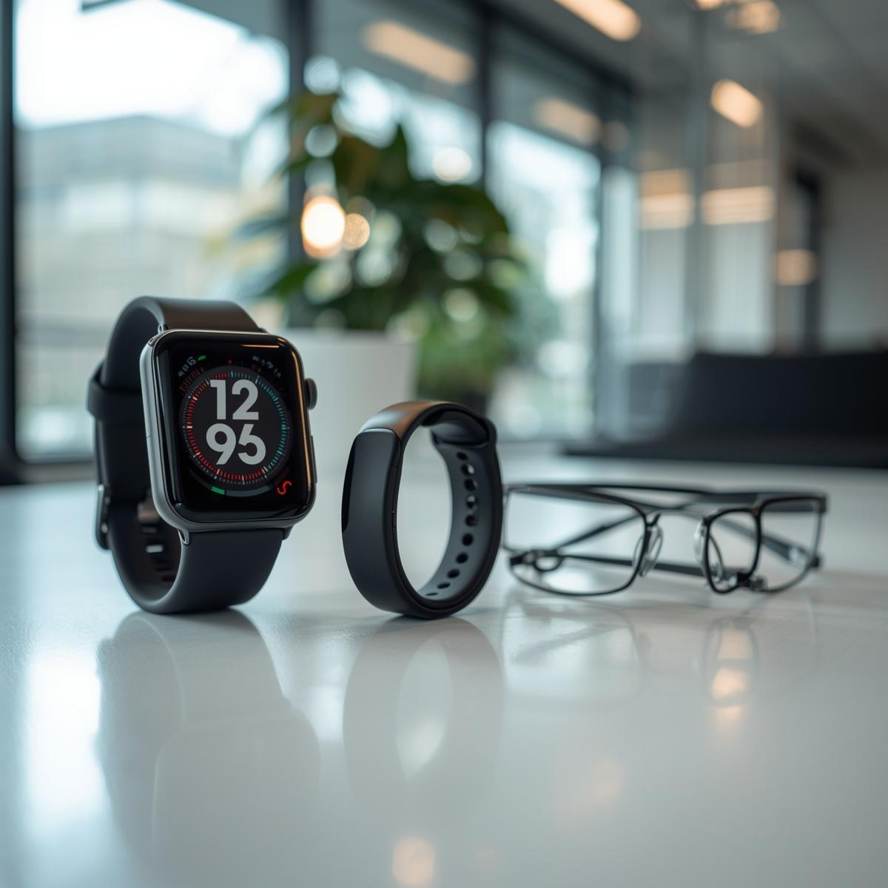

Wearable health trackers and fitness devices are becoming a common part of everyday life. These devices allow users to monitor their physical activity and basic health data in real time. Examples include smartwatches, which track heartrate and activity levels, and glucose monitors, which help users manage blood sugar levels. As technology continues to advance, wearables are increasinly playing a role, not only in personal fitness, but also in supporting healthcare and early health monitoring.
Wearable health technology has developed rapidly over the past decade due to improvements in sensors and data analytics (P. Bonato 2010). Early fitness trackers mainly focused on step
counting and calorie estimates, but modern devices can now track heart rhythm, oxygen levels, and even detect irregular heart patterns. Many devices sync with smartphones or cloud
platforms, allowing long-term data tracking and analysis.
In healthcare settings, some wearable devices are now used to monitor patients remotely, providing continuous monitoring that can assist in early detection, management, and even
prevention of health issues (Olawade et al, 2025). This expansion shows how wearable technology is moving from simple fitness tools to more advanced health monitoring systems.
The growing use of wearable health trackers matters because it is changing how people understand and manage their health daily. These devices can help users make more informed
lifestyle decisions and support individuals with medical conditions by providing continuous health monitoring. The shift toward real-time, data-driven health management also
has the potential to improve outcomes through early detection and prevention of serious conditions.
However, this technology also raises important concerns. Questions remain about the accuracy of the data these devices produce and how reliable they are for medical use, along with
privacy and regulatory issues (Bouderhem, 2023). In addition, the collection and storage of sensitive challenges is essential, as inaccurate readings or misuse of health data could
lead to poor decisions or potential harm to users.